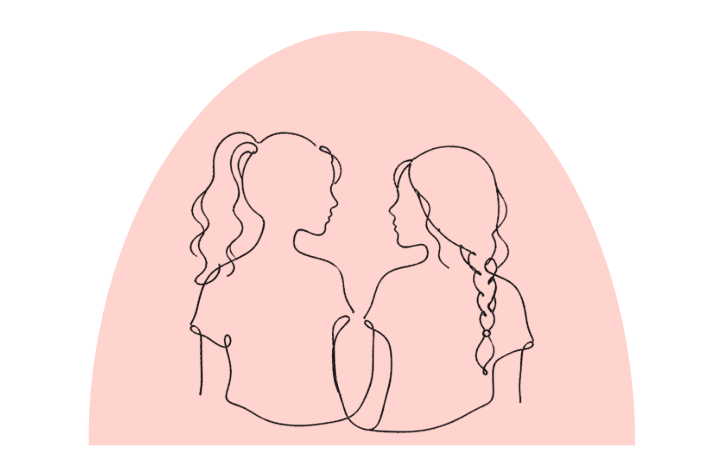

Introducing Consano
Because friendship shouldn't be this confusing
In a world of eye rolls, arguments and passive aggressive remarks, teenage friendship can feel like a whirlwind. But it's more than 'drama', and you know it. Friendships are a massive part of your life, especially at school. And that's exactly why you deserve to know what's healthy, what behaviours to tolerate and how to deal with being mistreated.
